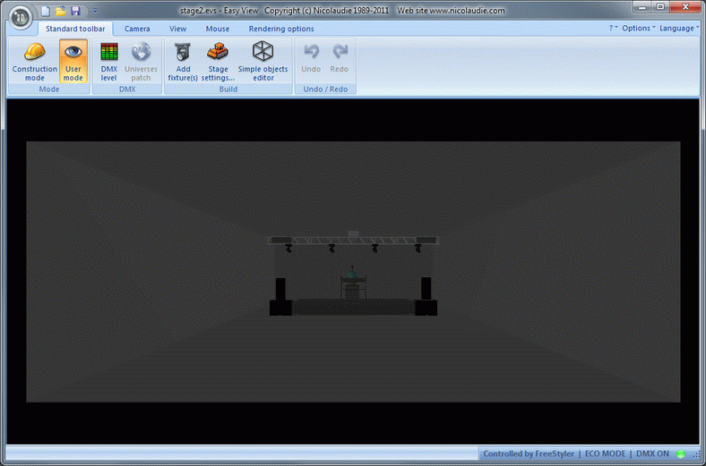
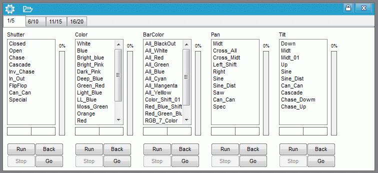
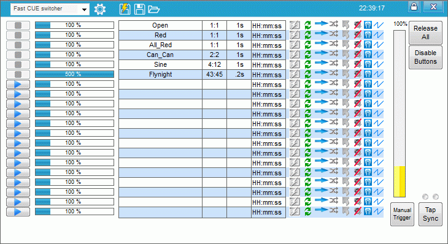

Small Stage Playground
This tutorial is more a playground with a stage made in “3D Easy View” and FreeStyler to control it.
The build up of this setup is made so it can be used as a simple setup where more and more functions can be added and tested.
It will be possible to work with the fixture control without having any hardware involved.
The files for the tutorial are made as single files with a guide of what to do with them. And the description of the single sub tutorial will be in a way so the files can be created just following the tutorial.
The stage consists of 4xLed bars, 6xLed strips, 1 Strobe and 4x moving heads and look like this.

{kind=link}
Basic Setup
The stage is set by following the sub tutorial here. Setup 3D Easy View
When the stage is set then FreeStyler has to be setup with the same fixtures.
This is done by setting the location with adding the fixtures on the right addresses.
This is done by following the link to this sub tutorial. Setup the location.
Now the stage is set and FreeStyler is setup to control it.
It is time to turn on light and see that it works.
Select some fixtures open the lamp panel and press “open” to open the shutter. For the led bar and strips it is necessary to increase the color faders because they don’t have a dimmer control function.
Simple Sequence tutorial
The basic way to use FreeStyler is creating sequences and play them back.
It is of course possible to control the fixture only via the fixture control panel but it is not the intended way to run a show.
The optimal way is a mix where something is place in sequences and something is controlled direct as override.
A sequence is a way to store a simple setting and then later recall it. It may be as simple as just setting one color or it may be more advanced with more steps / scenes.
The Sequences are stored in cues or attached to override buttons so they by one click can be activated / played back.
It is still possible to manual control over the fixtures when they are played back.
This will be discussed bellow
How to make some simple sequences for the KAM Bars, how they are collected in a cue and how they are played-back with a “sub-master” See Simple Sequence.
Matrix.
The matrix is intended to be used with LedTrix but also with some manual made sequences.
Using both Ledtrix and a sequence demonstrate that these two controls works in parallel.
Here is a small LedTrix tutorial. Matrix LedTrix Tutorial
And a small tutorial on making some sequences for the matrix.Matrix Sequence.
Sequences and Grouping grouping them.
One of the key controls in playing-back a sequence is the “Sub master”. To get optimal use of the “Sub master” control function, the sequences has to be separated in groups logical related.
How to group sequences.
Recording and playing back sequences is like having a 512 track recorder where only some wanted tracks are recorded. When the sequences are played back they can be combined in various ways but in general it doesn’t make sense to play back two sequences that are on the same tracks. This will be like having a tilt control where one sequence tells tilt to move up and another tells it to move down at the same time.
When the sequences are grouped then it is in a cue and there can max 20 sequences in a cue.
In this example I, as writer, have taken some decisions of how I want to control the light and thereby the split / grouping of sequences.
It is not the only way and you as reader may have totally other wishes and will learn the basics so the grouping can be optimal for you.
For some parts of this small stage the grouping has already been done.
Matrix sequences are natural to have in one group.
It has to be controlled independently of all the other fixtures. There is no relation between controlling the matrix and the rest of the fixtures.
Additional there is only some color images to control and they can be in grouped in one cue.
The same for the 4 KAM BARs.
Here the control is only color sequences with steady colors and some chases.
This is also to be controlled independently of the rest of the fixtures.
The BARs are RGB LEDs and there could have been made as 3 single Red, Green and Blue groups of sequences but this is not the way the “Simple sequences” are made.
The moving head.
The 4 OBYs can be split in sequences that control shutter, color and movements.
Shutter controls open, close, chases and so on.
Color controls steady colors and some shifting colors.
Movement control.
The Pan and Tilt controlled can be in same sequences but they can also be separated in pan alone and tilt alone.
By separating them it is possible to make combinations which are a bit more flexible.
See the sequence examples for the moving heads here.
Shutter Sequences for the Moving Heads
Color sequences for the moving heads
Movement Sequences for the moving heads
The Sequences and Cues created in the sub tutorial can be found here. freestyler_oby.zip
Sub Master.
As mentioned above Sub Master is one of the key play-back functions.
Adding the cues to the sub master and it should look like bellow.

And up running the cue may look something like this.

Looking into the Submasters here: Using SubMaster
As sequences are one of the things that can require much work there are some things that can make this work a bit easier.
Generating sequences can be done with presets so it is possible in a simple way to make changes that affect the whole sequence without recreating the sequence.
Preset Tutorial
A fast way to make complex movements can be the predefined Bezier shapes. Bezier Shape tutorial.
More to come
{kind=link}
{kind=link}